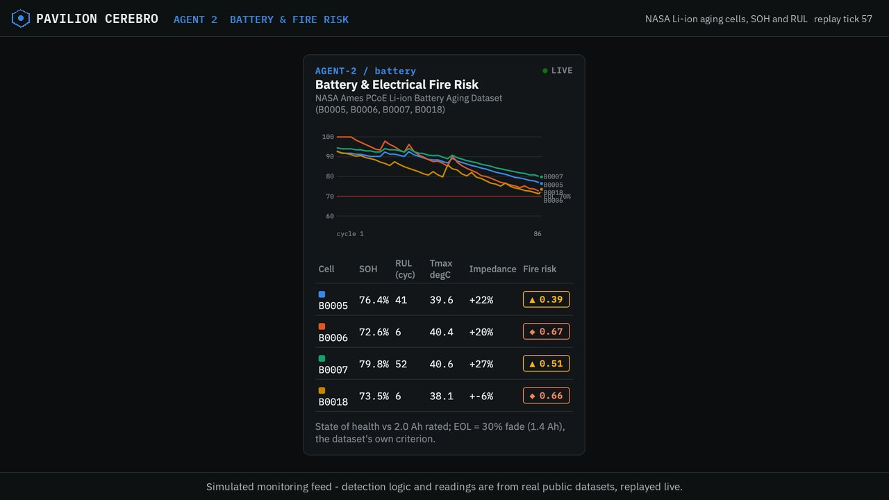
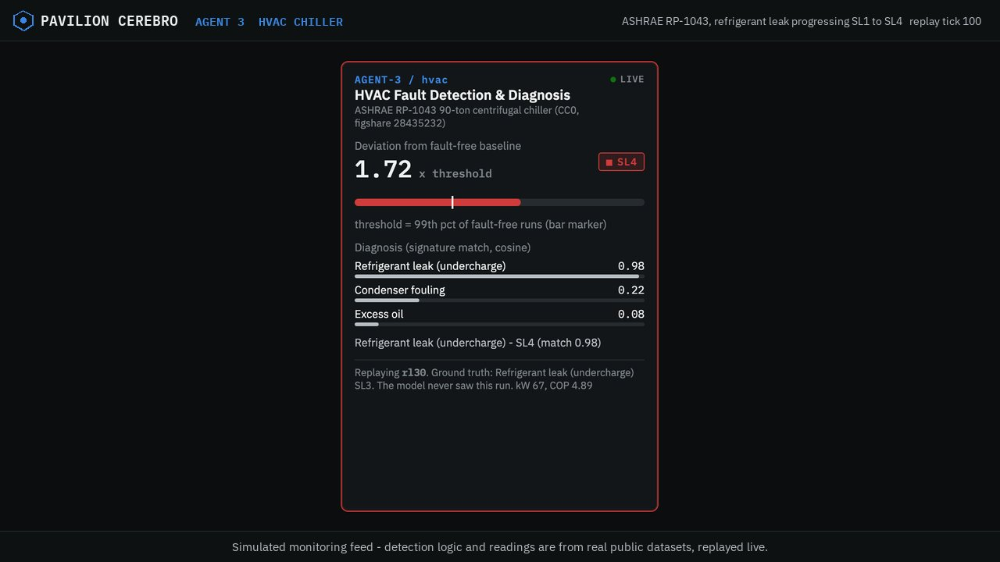
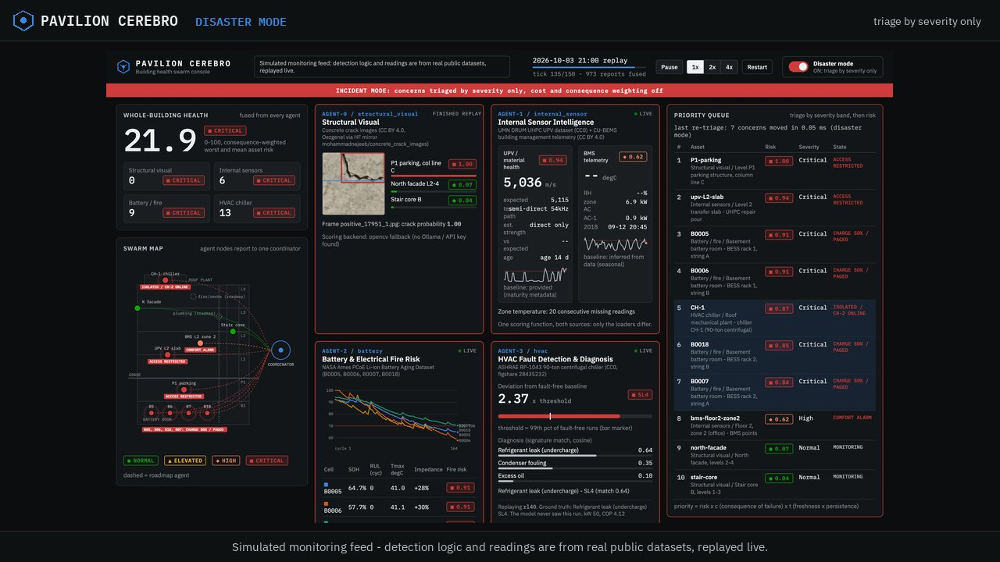

~30%
of certified non-destructive-testing personnel in the US are over 55, in a workforce of about 89,800. The people who read the signals are scarce.
ASNT 2023 report via Quality Magazine (May 2025); ASNT Foundation workforce summaryBuilding health, structural safety, predictive maintenance
Pavilion Cerebro is for owners and facility managers of commercial buildings. Specialist agents watch cracks, concrete, building telemetry, battery storage and chillers. One coordinator fuses their findings into a single ranked picture and acts before small problems become expensive failures.
Hackathon prototype. Detection logic and readings come from real public datasets, replayed live. The building and its mitigation actions are simulated.
Inspection today is manual, periodic and split by trade. The structural engineer, the battery vendor and the HVAC contractor each see one slice, on their own cadence. What gets missed between visits is exactly what the data below shows.
of certified non-destructive-testing personnel in the US are over 55, in a workforce of about 89,800. The people who read the signals are scarce.
ASNT 2023 report via Quality Magazine (May 2025); ASNT Foundation workforce summaryis the default routine interval for a US bridge inspection under the National Bridge Inspection Standards. Even the most regulated structures are checked on a calendar, with long gaps in between.
NBIS final rule, 23 CFR 650, 6 May 2022charge cycles was all it took for three of NASA's four aged Li-ion cells to lose 30% of capacity and cross end-of-life. Our agent flagged each one 32 to 43 cycles ahead of the crossing.
NASA Ames PCoE battery aging data; lead times measured by scripts/selfcheck.pyof operating windows showed a detectable signature with a chiller 10% short of refrigerant. At 40% short it was 85%. Early faults hide inside normal-looking readings unless something watches continuously.
ASHRAE RP-1043 chiller data; detection rates measured on runs the model never sawEvery agent implements the same interface: ingest its data, output a calibrated 0-1 risk score with evidence, report to the coordinator. Adding a subsystem means writing one more agent, not rebuilding anything.
A frame-rendered walkthrough of the working prototype: each agent's live detection, the coordinator ranking concerns, a mitigation firing and disaster mode re-triaging the queue. Prefer to go at your own pace, with no jargon? Try the plain-English walkthrough instead.



Every number below comes from an actual pipeline run over real public data (scripts/selfcheck.py). None of it is projected or estimated.
We say exactly where the line is. That is the credibility of the prototype.
The working prototype runs locally: the Python agents, coordinator and dashboard. This site only presents it and does not run the pipeline.
python -m venv .venv && . .venv/bin/activate
pip install -r requirements-cerebro.txt
python -m dashboard.server # http://localhost:8765